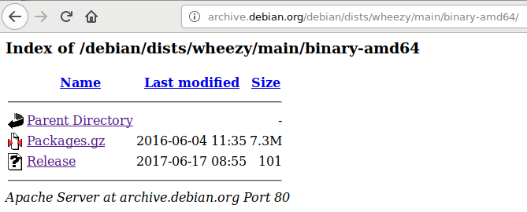

Иногда возникают ситуации, когда необходимо раздобыть пакеты от старых дистрибутивов Debian Linux, поддержка которых давно закончилась. На сайте проекта Debian эти дистрибутивы помечены как устаревшие, и для них не работает поиск по пакетам. Где и как раздобыть пакет, совместимый со старыми версиями этой операционной системы?
Найти информацию о старых пакетах Debian можно в официальном архиве Debian:
http://archive.debian.org/debian/dists/
Состав дистрибутивов в этом архиве, на 2020 год, следующий:
Debian-0.93R6/ 2008-10-31 19:43 -
bo/ 1998-12-08 22:17 -
buzz/ 2008-10-31 23:13 -
etch-m68k/ 2010-06-20 20:24 -
etch/ 2010-06-20 20:23 -
hamm-proposed-updates/ 2008-11-01 01:09 -
hamm/ 1999-02-15 19:59 -
jessie-backports-sloppy/ 2019-02-13 08:27 -
jessie-backports/ 2019-02-12 22:44 -
jessie-kfreebsd/ 2019-04-13 08:55 -
jessie/ 2019-02-17 02:42 -
lenny/ 2012-03-25 08:48 -
potato-proposed-updates/ 2003-09-05 16:31 -
potato/ 2003-09-05 16:31 -
rex/ 2008-10-31 19:51 -
sarge-proposed-updates/ 2008-10-28 22:59 -
sarge/ 2008-10-29 08:01 -
slink-proposed-updates/ 2008-11-01 16:46 -
slink/ 2000-03-04 17:24 -
squeeze-lts/ 2016-03-08 21:26 -
squeeze-proposed-updates/ 2016-03-08 21:12 -
squeeze/ 2015-08-25 13:02 -
wheezy-backports-sloppy/ 2019-02-15 09:15 -
wheezy-backports/ 2019-02-15 09:15 -
wheezy/ 2019-02-16 17:20 -
woody/ 2009-06-12 22:40 -
Искать нужный пакет следует следующим образом. Например, нужно найти файл пакета htop для wheezy. Как это сделать? Надо зайти в подкаталог:
/wheezy/main/binary-amd64
... и открыть файл Packages.gz:

Внутри этого файла будет лежать текстовый файл с именем Packages.
Чтобы найти в нем описание пакета htop, надо искать по подстроке "Package: htop". В результате будет найдено следующее описание:
Package: htop
Version: 1.0.1-1
Installed-Size: 211
Maintainer: Eugene V. Lyubimkin <jackyf@debian.org>
Architecture: amd64
Depends: libc6 (>= 2.3.4), libncursesw5 (>= 5.6+20070908), libtinfo5
Suggests: strace, ltrace
Description: interactive processes viewer
Homepage: http://htop.sourceforge.net
Description-md5: 8eb5aa19b3c92a975dc78e2165f6688d
Tag: admin::monitoring, interface::text-mode, role::program, scope::utility,
uitoolkit::ncurses, use::monitor, works-with::software:running
Section: utils
Priority: optional
Filename: pool/main/h/htop/htop_1.0.1-1_amd64.deb
Size: 74904
MD5sum: 7f229dbf58d25bb0ac627c3a012dd3ff
SHA1: 9d741e558dab209c67f0385e2bab812aaf5540aa
SHA256: 872edad80ac74297b2980a24b02bcb24c417c54f441f93ba7661b1a915c2fe18
В этом тексте в строке Filename написан относительный путь к бинарному файлу с deb-пакетом. Полный путь будет выглядеть так:
http://archive.debian.org/debian/pool/main/h/htop/htop_1.0.1-1_amd64.deb
То есть, можно этот файл найти через web-интерфейс и скачать его, можно скачать через wget, сконструировав себе прямой URL путем прибавления к относительному пути префикса "http://archive.debian.org/debian/".
* * *
Таким образом можно вытягивать файлы старых пакетов для устаревших дистрибутивов на базе Debian, в репозитариях которых есть не все пакеты. Это справедливо, например, для Astra Linux. Сертифицированный состав пакетов этого дистрибутива сильно сокращен: в нем нет таких стандартных программ как htop, xclip, checkinstall, valgrind и т. д., что ограничивает возможность разработки и тестирования ПО для сертифицированных систем. Если политика предприятия допускает установку необходимого ПО на рабочие станции разработчиков, то находить пакеты для штучной установки пакетов можно вышеописанным способом.